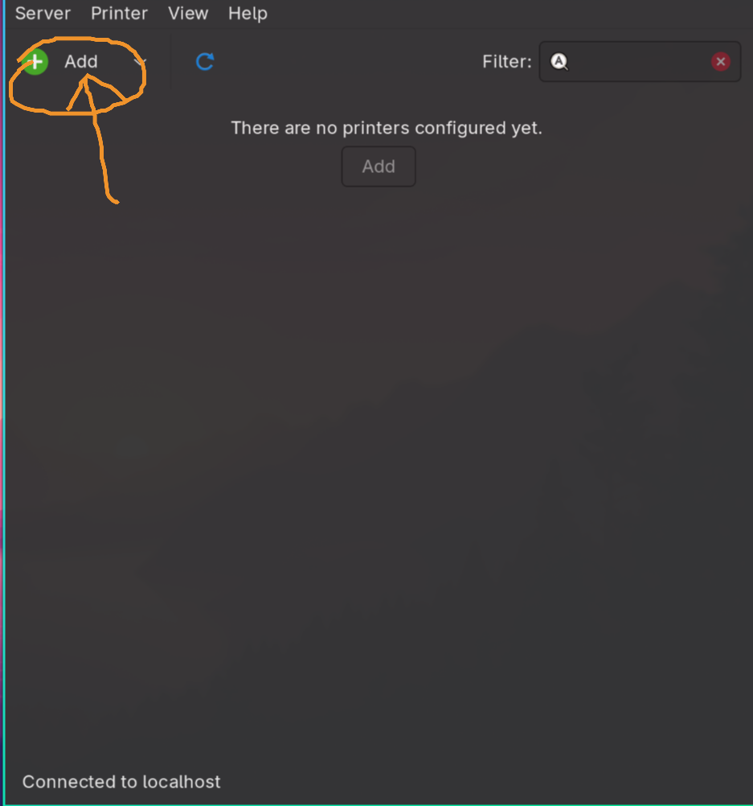
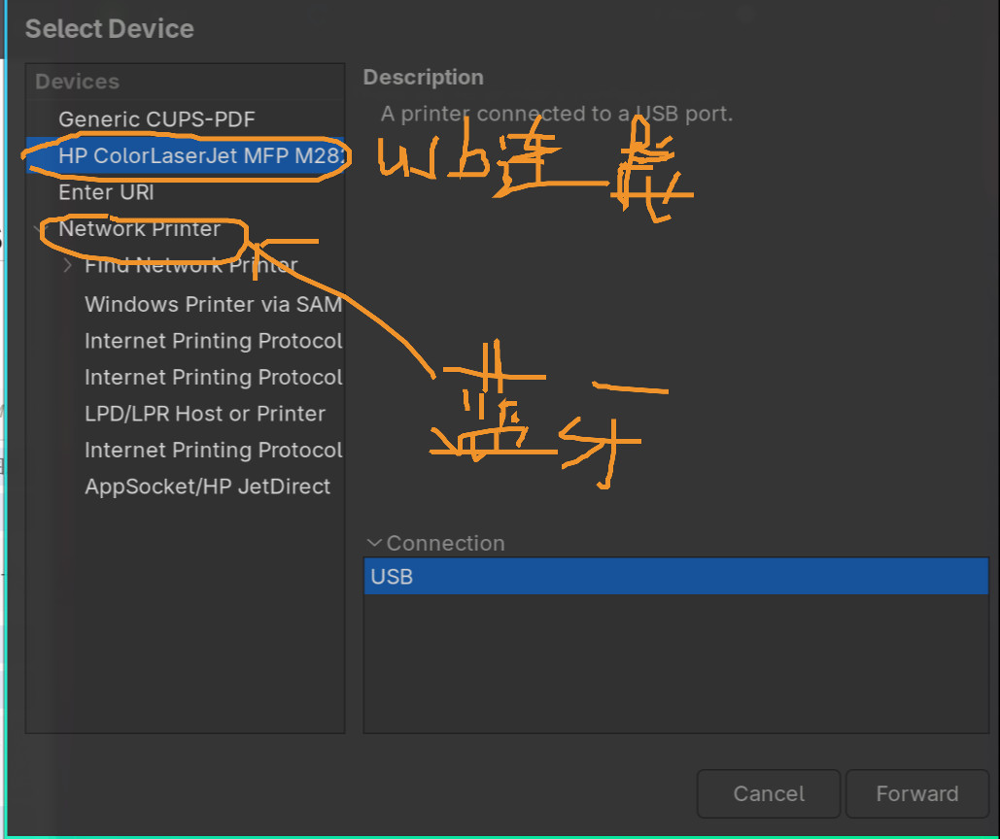
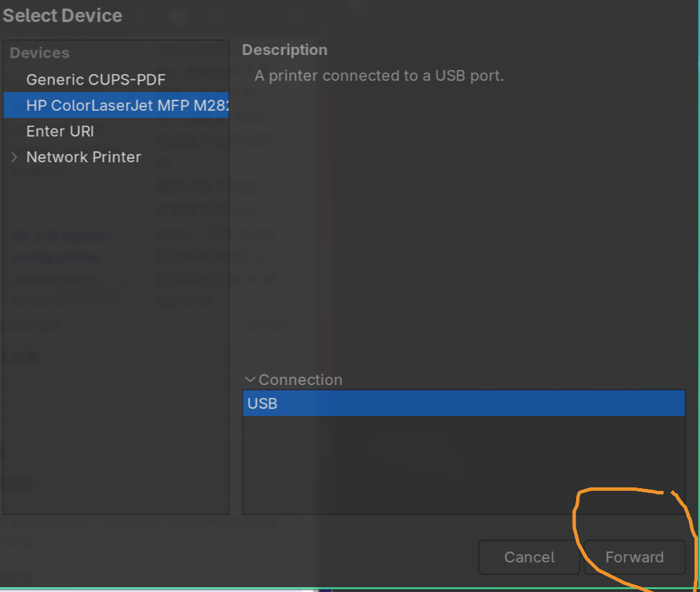
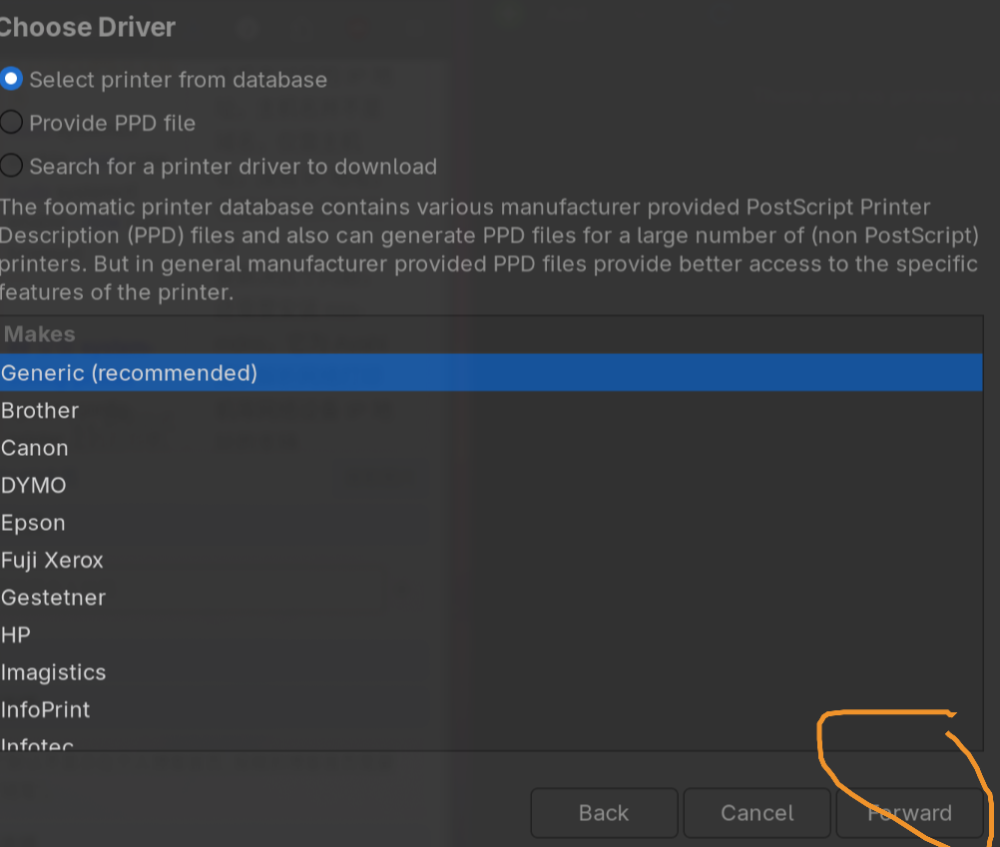
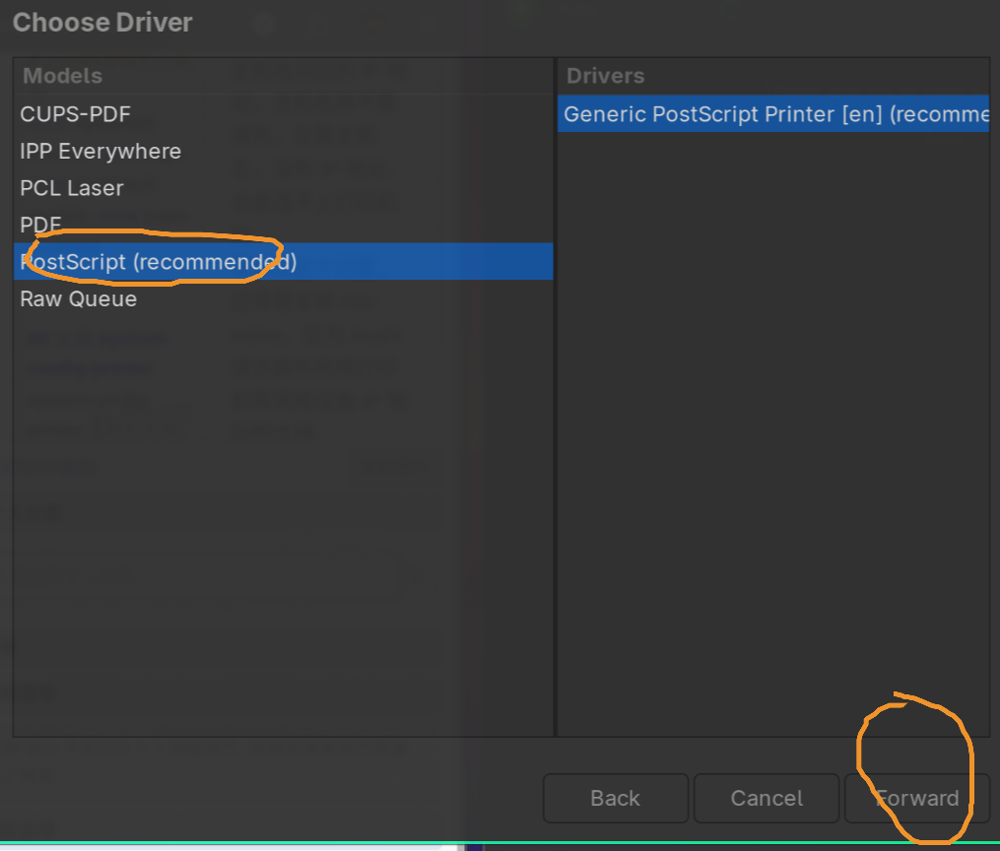
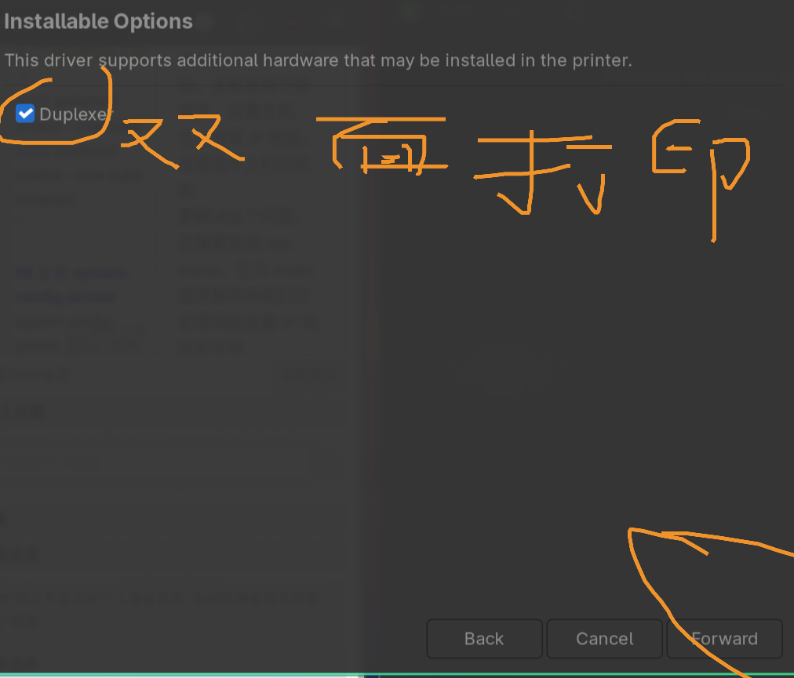
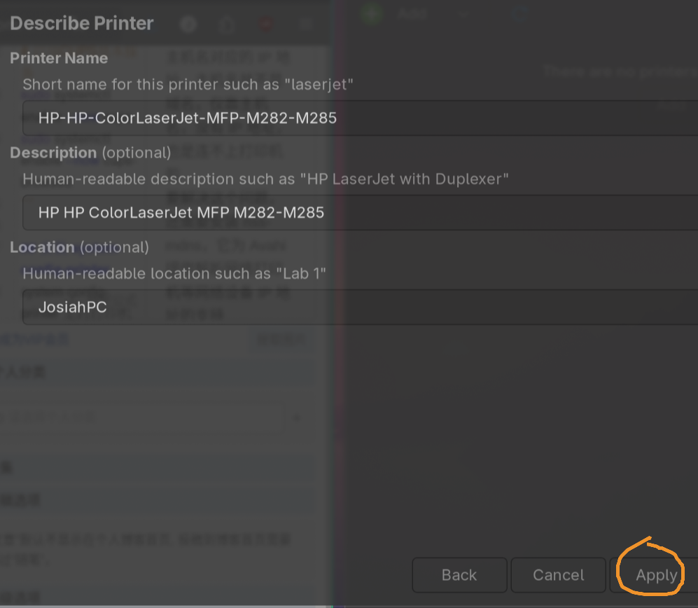

Linux 下缺少打印机驱动是常见问题。Linux 在打印方面确实不如 windows 即插即用方便，配置步骤还是颇为复杂的，请各位耐心观看本文。
安装 CPUS
安装 CUPS 服务：
# Arch Linux / Manjaro / Omarchy
sudo pacman -Sy cups cups-browsed bluez-cups cups-pdf
# Debian / Ubuntu / Deepin
sudo apt update
sudo apt install cups cups-browsed bluez-cups cups-pdf
# OpenSUSE
sudo zypper install cups cups-browsed bluez-cups cups-pdf
# Fedora
sudo dnf install cups cups-browsed bluez-cups cups-pdf
启动 CUPS 服务：
# 启用CUPS基本服务
sudo systemctl enable --now cups
sudo systemctl enable --now cups-browsed
安装 system-config-printer
system-config-printer 是的打印机管理工具，由 RedHat 团队开发
# Arch Linux / Manjaro / Omarchy
sudo pacman -Sy system-config-printer
# Debian /OmarchyUbuntu / Deepin
sudo apt update
sudo apt install system-config-printer
# OpenSUSE
sudo zypper install system-config-printer
# Fedora
sudo dnf install system-config-printer
安装 nss-mdns
CUPS 使用 Avahi 来搜索网络打印机，但在有的电脑上，光有 Avahi 还不够。CUPS 能搜索到打印机，但是只能解析打印机的主机名，无法解析主机名对应的 IP 地址。主机名并不是域名，仅靠主机名，没有 IP 地址，也是连不上打印机的
要解决这个问题，还需要安装 nss-mdns，它为 Avahi 提供解析网络打印机等网络设备 IP 地址的支持
# Arch Linux / Manjaro / Omarchy
sudo pacman -Sy nss-mdns
# Debian / Ubuntu / Deepin
sudo apt update
sudo apt install libnss-mdns
# OpenSUSE
sudo zypper install nss-mdns
# Fedora
sudo dnf install nss-mdns
安装 Foomatic-db
Foomatic-db：收集的有关 XML 文件中打印机、驱动程序和驱动程序选项的知识，foomatic-db-engine 用于生成 PPD 文件。
# Arch Linux / Manjaro / Omarchy
sudo pacman -Sy foomatic-db foomatic-db-ppds
# Debian / Ubuntu / Deepin
sudo apt update
sudo apt install foomatic-db foomatic-db-compressed-ppds
sudo apt install foomatic-filters
# Fedora
sudo dnf install foomatic-db foomatic-db-ppds foomatic-db-filesystem
配置打印机
这样就可以连接上打印机，在system-config-printer配置，进行打印了。如果说蓝牙打印机在 system-config-printer中network printer设置即可







最后可以选择打印测试，看看打印机是否可使用
💬 评论